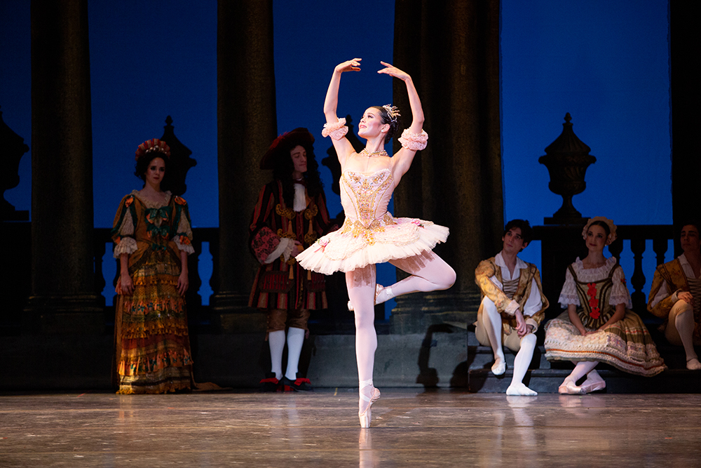

Ballet
The benefits of ballet
To begin with, ballet improves strength and endurance as it is a full body workout tht keeps the person fit.The emphasis on stretching and controlled movements helps increase flexibility and helps the dancer build a better Posture and body alignment Ballet requires intricate coordination of complex movements, leading to improved balance and body control. Ballet also boosts cardiovascular health. The focus and concentration required to learn ballet movements can help strengthen mental resilience. Memorizing choreography, understanding musicality, and coordinating movements improves memory, concentration, and problem-solving.The holistic approach of ballet, combining physical activity with artistic expression, can be a positive outlet for stress, promoting mental well-

The history of ballet
Ballet originated in 15th-century Italian Renaissance courts and developed in 16th-century France under Catherine de' Medici's patronage, evolving into the professional stage art form known today under King Louis XIV in the 17th century, with formalized techniques codified by the early 18th century. The art spread globally, particularly influenced by Russian performers in the 20th century, and continues to evolve into styles like neoclassical and contemporary ballet.